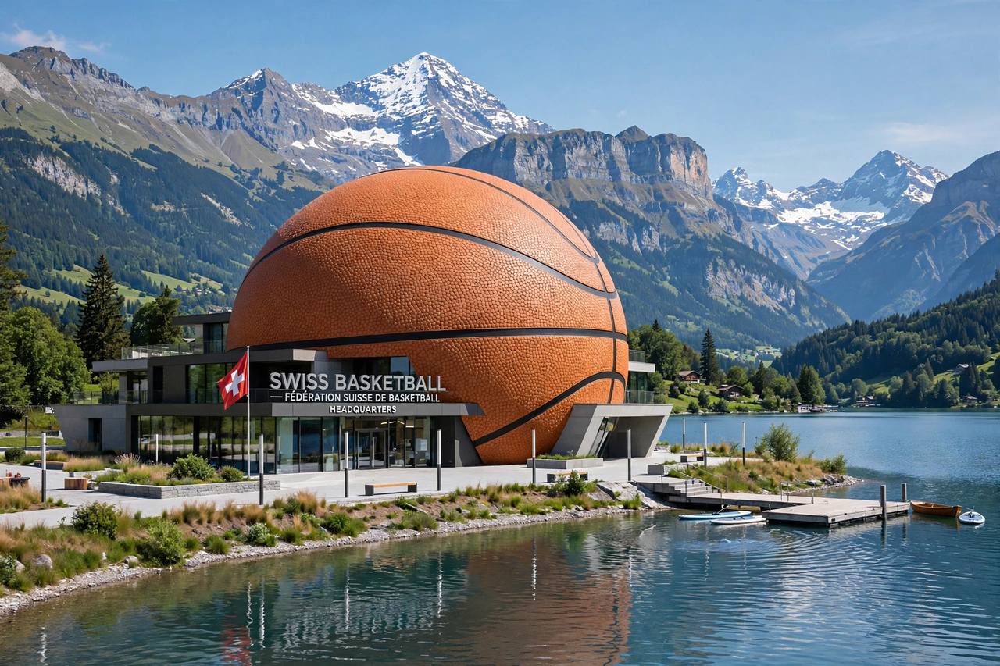

From Wikipedia, the free encyclopedia
| FIBA | |
|---|---|
 The FIBA headquarters, the House of Basketball, beside Lake Geneva in Mies, Switzerland | |
| Founded | 18 June 1932, Geneva, Switzerland |
| Full name | Fédération Internationale de Basketball |
| Headquarters | Mies, Switzerland |
| Membership | 212 national federations, in five zones |
| Flagship events | FIBA Basketball World Cup; Women's Basketball World Cup |
FIBA (the Fédération Internationale de Basketball) is the world governing body for basketball, recognised by the International Olympic Committee. Founded in Geneva in 1932 by eight national federations, it sanctions international competitions for national teams and sets the official rules of the game as played outside North America's professional leagues. Its 212 member federations are organised into five zones — Africa, the Americas, Asia, Europe and Oceania.
FIBA's flagship event is the FIBA Basketball World Cup for men, first held in 1950, alongside the Women's Basketball World Cup (since 1953) and youth world championships at under-17 and under-19 level. Through its zones it oversees continental championships such as EuroBasket in Europe, the FIBA AmeriCup and the Asia Cup. FIBA also governs the 3x3 variant of the game, which became an Olympic discipline at Tokyo 2020. FIBA rules differ slightly from those of the NBA — among them a trapezoidal lane replaced by a rectangular one in 2010 and different three-point distances — though the codes have gradually converged.
The federation adopted its current structure as basketball spread globally after the Second World War. For much of the 20th century FIBA enforced a strict amateur code that barred NBA players from Olympic basketball; its relaxation allowed the United States "Dream Team" to compete at the 1992 Barcelona Olympics, an event that transformed the sport's worldwide popularity.
Categories: FIBA | Basketball organisations | International sports federations